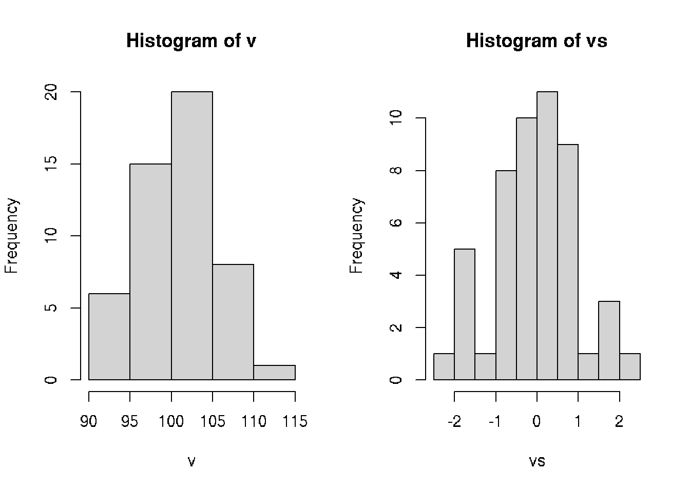

Normality
It is possible to use histogram to estimate normality of the distribution.

## [1] 24.53102
## [1] 4.95288
## [1] 0.700443
## [,1]
## [1,] -0.83587731
## [2,] -0.23016911
## [3,] -0.83587731
## [4,] -0.02826638
## [5,] -0.23016911
## [6,] -0.23016911
## [7,] 0.98124727
## [8,] 0.77934454
## [9,] 1.78885820
## [10,] 0.37553908
## [11,] -0.02826638
## [12,] 0.37553908
## [13,] -0.43207184
## [14,] 0.98124727
## [15,] -0.02826638
## [16,] 1.38505273
## [17,] 0.17363635
## [18,] 0.57744181
## [19,] 0.37553908
## [20,] 0.17363635
## [21,] 0.98124727
## [22,] 1.58695546
## [23,] 2.19266366
## [24,] -1.64348823
## [25,] -1.03778004
## [26,] -0.02826638
## [27,] 0.57744181
## [28,] -0.63397457
## [29,] 0.37553908
## [30,] 0.37553908
## [31,] -1.84539096
## [32,] -0.63397457
## [33,] -0.63397457
## [34,] -0.83587731
## [35,] -2.24919642
## [36,] 0.77934454
## [37,] 0.77934454
## [38,] -1.84539096
## [39,] 0.98124727
## [40,] -1.64348823
## [41,] 0.37553908
## [42,] 1.78885820
## [43,] 0.37553908
## [44,] -1.64348823
## [45,] -0.83587731
## [46,] 0.17363635
## [47,] -0.63397457
## [48,] -0.23016911
## [49,] -0.23016911
## [50,] 0.17363635
## attr(,"scaled:center")
## [1] 101.14
## attr(,"scaled:scale")
## [1] 4.95288
## [1] -0.83587731 -0.23016911 -0.83587731 -0.02826638 -0.23016911 -0.23016911 0.98124727 0.77934454 1.78885820
## [10] 0.37553908 -0.02826638 0.37553908 -0.43207184 0.98124727 -0.02826638 1.38505273 0.17363635 0.57744181
## [19] 0.37553908 0.17363635 0.98124727 1.58695546 2.19266366 -1.64348823 -1.03778004 -0.02826638 0.57744181
## [28] -0.63397457 0.37553908 0.37553908 -1.84539096 -0.63397457 -0.63397457 -0.83587731 -2.24919642 0.77934454
## [37] 0.77934454 -1.84539096 0.98124727 -1.64348823 0.37553908 1.78885820 0.37553908 -1.64348823 -0.83587731
## [46] 0.17363635 -0.63397457 -0.23016911 -0.23016911 0.17363635
